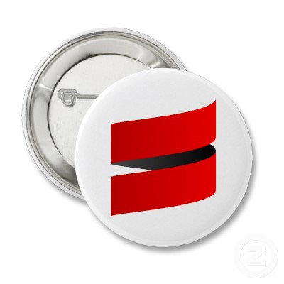
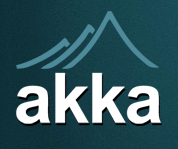
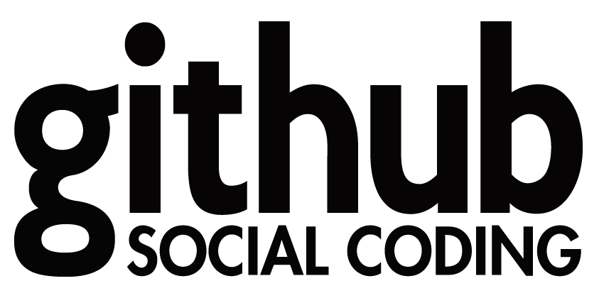
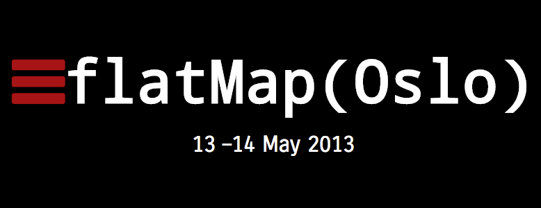
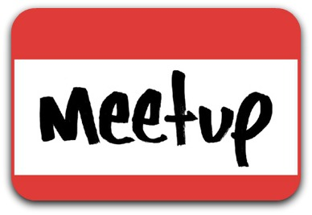
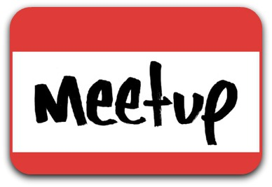
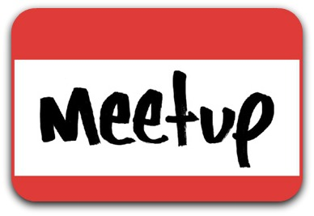

Scala > Java
Introduction to Scala
Frode Nerbråten / @froden
Hei og Velkommen! Hyggelig at jeg fikk komme og snakke litt om Scala for dere.
Jeg håper det er greit at jeg snakker på norsk og at dere forstår hva jeg sier.
Stopp meg gjerne og still spørsmål underveis hvis noe er uklart.
Frode Nerbråten, jobbet i Bekk i snart 8 år
Fagleder for Scala og JVM, som er Bekks kompetansegruppe for alternative språk på JVM-en. (scala, groovy, clojure)
Holdt på med Scala i ca 3 år og synes det er et veldig spennende språk.
Lært utrolig mye om programmering og ikke minst funksjonell programmering gjennom Scala
Så la oss se litt nærmere på hva Scala er
SCALA
A modern, statically typed, object-functional programming language on the JVM

Ble oppfunnet i 2001 av Martin Odersky sammen med teamet hans på EPFL-universitet i Lausanne i Sveits
Martin Odersky er Professor i programmeringsspråk og er mannen bak Java-kompilatoren og Java generics
Han var lei av mange av de utfordingene som er med Java og ønsket å lage et helt nytt språk designet fra bunnen av
SCAlable LAnguage -> Og skal være et språk som skalerer godt fra små script til store enterprise-løsniger
Er også et hint om at Scala er god på concurrency (samtidighet), både innebygd og gjennom rammeverk som Akka.
Hybrid objektorientert og funksjonelt språk og påstår å forene det beste fra to verdener
Kompilerer til samme JVM bytekode som Java
Mer avansert typesystem enn Java med type inference => sjelden trenger å angi typer eksplisitt.
Why Scala?
Hvorfor bruke Scala
Hva er det som gjør Scala så bra?
Elegant concise syntax
case class Person(name: String, age: Int) val person = new Person("Frode", 33)
person.age
//res0: Int = 33 def sayHi(p: Person) = "Hi there " + p.name
sayHi(person)
//res1: String = Hi there Frode
Syntaxen i Scala gir samme uttrykkskraft som man ofte forbinder med dynamiske språk som Ruby
Men med type safety i tillegg!
====
La oss se på hvordan man definerer en klasse
Klassen, medlemsvariabler og default constructor kan man angi på samme linje
Slenger man på case foran får man også equals, hashcode, accessor metoder (men ikke setter)(immutable)
Typen kommer etter variabelnavn i Scala - fordi man ofte kan utelate den
====
Vi instansierer et objekt på samme måte som i Java
val betyr en immutable variabel. Samme som final i Java. Trenger ikke type, men kunne skrevet person: Person
Metoder uten parameter kan kalles uten parantes: person.age
====
Vi definerer metoder med keywordet def
Denne metoden har ett parameter, p av typen Person
Returtypen er String, men den kan utelates. Vis alternativ
Alt etter = er definisjonen og kan selvsagt gå over flere linjer
Resultatet av siste expression blir returverdien
High performance
Compiled
Runs on the JVM
Comparable to Java
... or even better
Siden Scala er kompilert og typesjekking skjer compile time => optimalisert bytekode => bra performance
Mye raskere enn de dynamiske JVM-språkene jruby, groovy, clojure, jython
Faktisk så vil scala som regel være omtrent like raskt som Java
Viktig poeng fordi Java er kjent for veldig bra ytelse
På noen områder er Scala raskere enn Java
Object Oriented
trait Programming {
def makeSoftware(spec: String): Software = ...
}
trait Consulting {
def consult(problem: String): Advice = ...
}
abstract class Employee
class Developer extends Employee with Consulting with Programming
Scala er et objektorientert språk
Alt er objekter i Scala og det skilles ikke mellom objekter og primitiver som i Java
Jeg vil likevel påstå at idealet i Scala er funksjonell programmering
Men med støtte for OO får man mulighet for bedre innkapsling og modularisering
Collections bibliotekene er gode eksempler på blandingen av objektorientering og funksjonelt
====
Traits er scalas svar på interface i java
Traits kan derimot også inneholde implementasjon
Kan extende så mange man vil uten problemene med multiple inheritance
Traits gjør det mulig med mixin composition som i eksemplet mitt her
Functional
first class functions
val product = (num1: Int, num2: Int) => num1 * num2
List(1, 2, 3, 4).fold(1)(product)
//res0: Int = 24
partial application
val timesTwo: Int => Int = product(2, _)
List(1, 2, 3, 4).map(timesTwo)
//res1: List[Int] = List(2, 4, 6, 8)
Scala er et fullblods funksjonelt programmeringsspråk
Strict by default, men støtter også non-strict eller lazy evaluering
====
Første bud er at Scala støtter funksjoner som first class citisens
Støtter både anonyme funksjoner og lexical closures
product funksjonen tar to int-parametre
fold tar inn en funksjon som tar 2 int som parametre
1 ganger første tallet, resultatet ganger neste tallet osv => svar 24
====
Hva om vi bare ønsker å gange alle tallene i listen med f.eks. 2
Ikke noe problem. Vi partially applyer 2 som første argument og får en funksjon som tar 1 int som parameter
Denn kan vi så mappe over listen
map er for øvrig det samme som fmap i Haskell
Functional II
pattern matching
val people = List(Person("Frode", 33),
Person("Frode", 25),
Person("Alice", 27))
for (person <- people) {
person match {
case Person("Frode", age) if (age > 30) => println("Found me")
case Person("Frode", _) => println("Found some other Frode")
case Person(name, age) => println(s"Found ${name} age ${age}")
}
}
Scala støtter pattern matching som dere kjenner fra Haskell
case classes som Person gjør det mulig å pattern matche på alle feltene i klassen
Jeg har en listen med 3 personer
Itererer over denne og pattern matcher på hvert element
Hvis en person som heter frode har alder over 30 antar jeg at det er meg
Hvis ikke er det nok en annen frode
Til slutt alle andre treff
underscore er wildcard
Syntaksen minner litt om switch case statements i Java, men er mye mer avansert
Functional III
monadic syntax
val number1 = Some(1)
val number2: Option[Int] = None
val res = for {
n1 <- number1
n2 <- number2
} yield n1 + n2
//res: Option[Int] = None
Scala har noe som kalles for comprehensions som er en slags avansert for-loop (sammenlignet med java)
Den kan enten brukes til bare iterering uten yield til slutt
Eller som list comprehensions med yield
Eller for monadiske operasjoner
Dette er tilsvarende list comprehensions og do-notation i Haskell
Option er scalas svar på Maybe monaden
Med for-comprehensions kan vi jobbe med monadiske verdier på en imperativ og lesbar måte
Java interop
Use existing great Java frameworks
Write Java compatible APIs
Deploy on existing Java infrastructure
val s = "Scala"
//s: java.lang.String = Scala
En gangske kul ting med Scala er at det er kompatibelt med Java
Man kan bruke alle eksisterende Java-biblioteker og verktøy med Scala (Spring, Hibernate, Maven, osv..)
Man kan også skrive scalakode som kan brukes fra Javakode. Eksempler Akka og Play.
Men man må huske at ikke all Scalakode vil fungere fra Java.
For en Java virtual machine så er Scala-programmer bare vanlig bytekode
Man kan derfor deploye sine Scala-programmer på samme Java-infrastruktur som man allerede har (bra for kunder)
Scala bruker noen av de samme standardbibliotekene som Java, men ofte med litt ekstra funksjonalitet
Community




Scala har et stort community med mange engasjerte og meget dyktige folk
Det finnes mange bra rammeverk skrevet i og for Scala. Det blir stadig flere.
AKKA - actor framwork for concurrent systemer
Play2 - Scalas svar på Rails
Lift - Et view first basert web-rammeverk
Etter hvert meget god IDE-støtte både for IntelliJ og Eclipse
Man finner som regel svar på det man lurer på ved å google
LinkedIn use Scala
Men er det noen som bruker Scala i produksjon?
Jada, LinkedIn bruker det
BEKK use Scala
Bekk har for tiden ett rent Scala-prosjekt
Flere som bruker det til mindre ting
Flere vurderer å ta det i bruk
Twitter use Scala
Twitter fikk problemer med ytelse i sin Ruby-basete back-end
Begynte å skrive om kritiske deler til Scala i stedet
Basically , it's the future
@al3x
Basically its the future
Alex fra twitter er enig med meg at Scala er verdt å satse på
Jeg mener Scala er et meget attraktivt alternativ til Java
Og det er modent nok til å ta det i bruk på prosjekter i dag!
Source: Mike Rohde
Jeg skjønner at det kan bli litt kjedelig å høre på meg stå og prate
Så derfor tenkte jeg å kjøre en liten demo
Jeg skal vise et eksempel på to veldig vanlige problemstillinger som kan løses elegant i Scala
Nemlig feilhåndtering og Samtidighet (concurrency)
Vise bruken av to nyttige monads: Try til feilhåndtering og Future til concurrency
 
